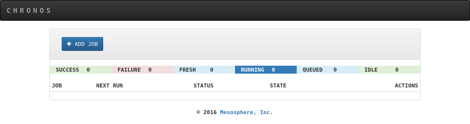
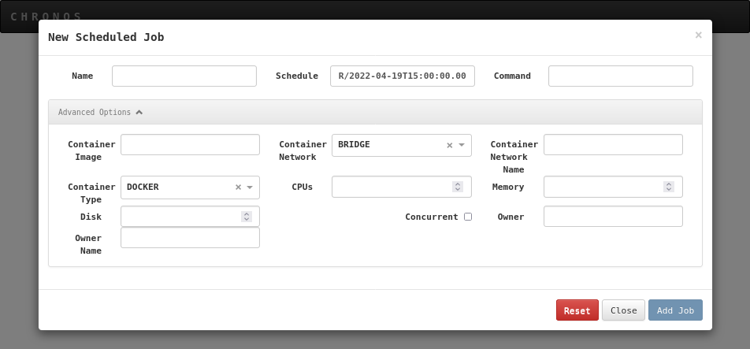
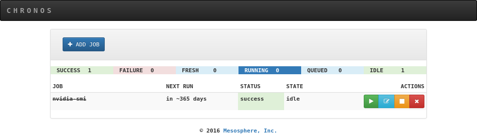

Job orchestrator with Chronos¶
Updated on 04Oct2022
0 User Support¶
If you need support for your application, please use this link to create a ticket with title “ReCaS HPC/GPU: Chronos instance support” and then describe your issue.
It is STRONGLY advised to subscribe to the recas-hpu-gpu mailing list. Create a ticket with the title “ReCaS HPC/GPU: subscribe to the mailing list”.
1 Introduction¶
Chronos is the tool used to submit jobs to the ReCaS-Bari HPC/GPU cluster.
Note
ONLY Docker containers can be executed in the cluster.
You can run a third party Docker container or you can build your custom one. Please refer to the guide at this link for more details.
2 Request your personal ReCaS Chronos instance¶
Chronos is available only for users with a ReCaS-Bari HPC/HTC account active. Users without such an account MUST register using this link (check the box "Account for access to ReCas-Bari compute services (HTC/HPC)").
You can verify if the registration is successfully completed by access to the frontend.recas.ba.infn.it server via ssh:
ssh <your-username>@frontend.recas.ba.infn.it
After that, you can request your personal Chronos instance using this link.
Please provide the following information:
Title: “ReCaS HPC/GPU: new Chronos instance request”
Issue:
- Name and Surname
- Username
- Email
3 Chronos Web Interface¶
Chronos provdes a simple and fast web interface as shown in the following figure.

Through the web interface is possible to verify your job status. Moreover, it can be used to submit scheduled or dependent jobs.
3.1 Submit a job using the Web Interface¶
The web interface provides the possibility to submit a job by clicking on the “ADD JOB”. The following figure shows the box where you can insert all job parameters.

After adding the job, if the requested resources are available, the job is started. Otherwise the job is put in the queued state.
The following image shows the status of a job.

The boxes on the right allow to start again the job, edit the job description, stop and delete a job, respectively.
3.2 Submit the job using the terminal¶
Although submitting jobs through the web interface might seem easier at first, it could be not comfortable, scalable and fast. Submitting jobs using the terminal is RECOMMENDED.
This method requires a JSON file containing all the job information and the execution of a command that transmits the job information to your personal Chronos instance. Following an example of a JSON file. Insert the information of your specific job and save the file.
{
"name": "<detailed-and-unique-job-name>",
"command": "python3.6 </lustre/path/to/your/code>",
"shell": true,
"retries": 2,
"description": "",
"cpus": 4,
"disk": 10,
"mem": 8192,
"gpus": 1,
"environmentVariables": [],
"arguments": [],
"runAsUser": "<your-username>",
"owner": "<your-username>",
"ownerName": "<your-username>",
"container": {
"forcePullImage": true,
"type": "mesos",
"image": "<your-container-image>",
"volumes": [{"containerPath": "/lustre/path/to/your/home-directory>",
"hostPath": "/lustre/path/to/your/home-directory",
"mode": "RW"}]
},
"schedule": "R1//P1Y"
}
Note
- It’s important to insert an unique name for each submitted job, this will be important during the debugging phase. The name should ALWAYS start with your username. Insert dash ( - ) between words. Es “myuser-test-job-1-date-2020-09-34”.
- The command field is specific for each application, what written in the example will not work in your use case. Absolute path is preferred.
- <your-username> is the user created during the registration.
- <your-container-image> is the container image name to use for your application.
- The schedule field is used to type how many times you want to execute the job and the period among execution, please refer to this guide (Adding a Scheduled Job - section) if you need it otherwise leave it as you see in the example.
The command used to submit the job is based on CURL. On a machine with a Linux OS, open a file editor and copy the following lines inside and save it (e.g. with the “submit-to-chronos” name).
#!/bin/bash
FILE=$1
USERNAME=<your-username>
PASSWORD=<chronos-instance-password>
HOSTNAME=<chronos-instance-hostname>
PORT=<chronos-instance-port>
curl -u $USERNAME:$PASSWORD -L -H 'Content-Type: application/json' -X POST --data-binary "@$FILE" http://$HOSTNAME:$PORT/v1/scheduler/iso8601
Once the request will be approved, the administrator will provide <chronos-instance-password>, <chronos-instance-hostname> and <chronos-instance-port> by email.
To submit the job, execute the following command (supposing the json file name is “job.json” and the submit command file name is “submit_chronos”)
bash ./submit_chronos job.json
Note
Since your Chronos instance is not accessible from outside, the unique procedure to submit job is to store json files and the script used to submit jobs in your home directory on frontend.recas.ba.infn.it (officially the ReCaS-Bari storage based on GPFS) and execute the command from there.
3.3 User Support¶
For any problem related to the Chronos service, use this link for create a support request, inserting as title “ReCaS HPC/GPU: Chronos issue”, then describe the problem in the issue box. Your username and job_name MUST be added.
At the moment, users can not access to the job logs. For support on a specific job, submit a support request providing the username, job_name and describing the problem in the issue box.
Tip
It is STRONGLY advised to subscribe to the recas-hpu-gpu mailing list. Create a ticket with the title “ReCaS HPC/GPU: subscribe to the mailing list”.
3.4 Access to the Chronos Web Interface¶
In order to access your Chronos instance is needed to create a SSH Tunnel.
Open a shell and execute the following command:
ssh -f -N -L 127.0.0.1:<localhost-port>:<chronos-instance-hostname>:<chronos-instance-port> <your-username>@frontend.recas.ba.infn.it
Note
<localhost-port>: you can choose the port by yourself
IMPORTANT
The SSH tunnel works in background (-f flag), if the process crashes or you reboot your machine, you have to create again the SSH tunnel using the above command
Now you are able to access to your Chronos instance using your favorite browser and the url "localhost:<localhost-port>"
4 Example¶
The following JSON could be used as first test by the user.
{
"name": "<username>-my-first-job-submission",
"command": "sleep 5 && nvidia-smi",
"shell": true,
"retries": 4,
"description": "",
"cpus": 1,
"disk": 0,
"mem": 1024,
"gpus": 1,
"environmentVariables": [],
"arguments": [],
"runAsUser": "<username>",
"owner": "<username>",
"ownerName": "<username>",
"container": {
"forcePullImage": true,
"type": "mesos",
"image": "registry-clustergpu.recas.ba.infn.it/gvino/cuda11.5.0-base-ubuntu20.04:0.1"
},
"schedule": "R1//P1Y"
}
Save it as "my-first-job.json" on your personal computer and send this file and that used to submit the job to your home in the ReCaS-Bari Storage using the command:
scp ./my-first-job.json submit_chronos <username>@frontend.recas.ba.infn.it:
Then access to your storage using:
ssh <username>@frontend.recas.ba.infn.it:
Finally, submit the job using the command:
bash submit_chronos my-first-job.json
Go to the web inteface to verify whether the job was successfully submitted and executed.